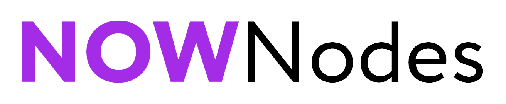

Integration Overview¶
This documentation is also available as a PDF.
Dash Core is a “fork” of Bitcoin Core and shares many common functionalities. Key differences relate to existing JSON-RPC commands which have been customized to support unique functionalities such as InstantSend.
General Information: Dash is a “Proof of Work” network and is similar to Bitcoin.
Block Time: ~2.6 Minutes per Block
Github Source: https://github.com/dashpay/dash
Latest Release: https://github.com/dashpay/dash/releases
JSON-RPC Interface: The majority of commands are unchanged from Bitcoin making integration into existing systems relatively straightforward. Note that the following commands have been modified to support InstantSend:
Block Hashing Algorithm: Dash uses the “X11” algorithm in place of SHA256 used in Bitcoin. It’s important to note, however, that this only affects the hashing of the Block itself. All other internals utilize SHA256 hashes (transactions, merkle root, etc) which allows for most existing libraries to work in the Dash ecosystem.
Special Transactions: Dash Core v0.13.x introduces the concept of “Special Transactions”. Please see the Transaction Type Integration Guide for more information.
Special Transactions¶
This documentation is also available as a PDF.
Dash 0.13.0 and higher implement DIP002 Special Transactions, which form a basis for new transaction types that provide on-chain metadata to assist various consensus mechanisms. The following special transaction types exist:
Release |
Version |
Type |
Payload Size |
Payload |
Payload JSON |
Transaction Purpose |
|---|---|---|---|---|---|---|
v0.13.0 |
3 |
0 |
n/a |
n/a |
n/a |
Standard Transaction |
v0.13.0 |
3 |
1 |
<variable int> |
<hex> |
proRegTx |
|
v0.13.0 |
3 |
2 |
<variable int> |
<hex> |
proUpServTx |
|
v0.13.0 |
3 |
3 |
<variable int> |
<hex> |
proUpRegTx |
|
v0.13.0 |
3 |
4 |
<variable int> |
<hex> |
proUpRevTx |
|
v0.13.0 |
3 |
5 |
<variable int> |
<hex> |
cbTx |
|
v0.13.0 |
3 |
6 |
<variable int> |
<hex> |
qcTx |
Integration notes:
DIP002 Special Transactions are a foundational component of Dash Core v0.13.0 and introduce a new Transaction Version and related “Payload” to the network.
Integrated Systems must be able to serialize and deserialize these new Transaction Types in order to accurately encode and decode Raw Transaction data.
From a backwards compatibility perspective, the 4 byte (32-bit)
versionfield included in Legacy Transactions has been split into two fields:versionandtype(each consisting of 2 bytes).Refer to the Special Transactions section of the dash developer reference for additional detail on these data types, e.g. <variable int>.
InstantSend status and Payload JSON (e.g.
proRegTx) is included in the JSON-RPC response, please note that this data is not part of the calculated hash and is provided for convenience.
See the v0.13.0 transaction types integration documentation (PDF) for worked examples of each transaction type.
InstantSend¶
This documentation is also available as a PDF.
InstantSend is a feature provided by the Dash network that allows for zero-confirmation transactions to be safely accepted and re-spent. The network attempts to lock the inputs of every valid transaction when it is broadcast to the network. Every secured transaction is included in a following block in accordance with standard blockchain principles.
InstantSend is enabled by the Masternode Network which comprises approximately 5,000 masternode servers. These nodes are differentiated from standard nodes by having proven ownership of 1,000 Dash, making the network highly resistant to Sybil attacks. Masternodes form Long-Living Masternode Quorums (LLMQs), which are responsible for providing near instant certainty to the transaction participants that the transaction inputs cannot be respent, and that the transaction will be included in a following block instead of a conflicting transaction.
This concept works as an extension to Nakamoto Consensus. InstantSend enables transacted funds to be immediately and securely respent by the recipient, even before the transaction is included in a block.
Receiving InstantSend Transactions¶
Receiving an InstantSend Transaction introduces two requirements:
The ability to determine the “InstantSend Status” of a given transaction.
The ability to adjust “Confirmation Status” independently of block confirmation.
InstantSend Status is typically determined through direct connection with the dash daemon, ZMQ notification, or through the usage of an external wallet notification script.
Direct Connection: InstantSend Status can be identified through direct connection with the Dash daemon using JSON-RPC protocol. The “instantlock” attribute of the JSON response reflects the status of the transaction and is included in the following commands:
ZMQ Notification: Whenever a transaction enters the mempool and whenever a transaction is locked in the mempool, ZMQ notifications can be broadcast by the node. A list of possible ZMQ notifications can be found here.
The following notifications are relevant for recognizing transactions and their corresponding instantlocks:
zmqpubhashtx
zmqpubhashtxlock
zmqpubrawtx
zmqpubrawtxlock
Wallet Notification: The Dash Core Daemon can be configured to execute an external script whenever an InstantSend transaction relating to that wallet is observed. This is configured by adding the following line to the dash.conf file:
instantsendnotify=/path/to/concurrent/safe/handler %s
This is typically used with a wallet that has been populated with watch-only addresses.
Broadcasting InstantSend Transactions¶
Since Dash v0.14.0 established LLMQs on the Dash network, quorums will now attempt to lock every valid transaction by default without any additional fee or action by the sending wallet or user. A transaction is eligible for InstantSend when each of its inputs is considered confirmed. This is the case when at least one of the following circumstances is true:
the previous transaction referred to by the input is confirmed with 6 blocks
the previous transaction is confirmed through an older InstantSend lock
the block containing the previous transaction is ChainLocked
When checking the previous transaction for an InstantSend lock, it is important to also do this on mempool (non-mined) transactions. This allows chained InstantSend locking.
Additional Resources¶
The following resources provide additional information about InstantSend and are intended to help provide a more complete understanding of the underlying technologies.
API Services¶
This documentation is also available as a PDF.
Several API services exist to facilitate quick and easy integration with the Dash network for services including:
Transaction broadcasting
Exchange rates
Currency conversion
Invoice generation
API Services are typically leveraged to eliminate that requirement of running your own infrastructure to support blockchain interactions. This includes mechanisms such as:
Forming and Broadcasting a Transaction to the network.
Address generation using HD Wallets.
Payment Processing using WebHooks.
There are a variety of options for supporting these methods, with the key differentiator being the pricing model included and supported features. The following list of API Providers attempts to outline these key features/differentiators and also includes a link to related documentation.
Insight¶

https://github.com/dashevo/insight-api
The open-source Insight REST API provides you with a convenient, powerful and simple way to read data from the Dash network and build your own services with it. A practical guide to getting started with the Insight API and Insight UI block explorer is available here.
Features: Transaction Broadcast, WebSocket Notifications.
Pricing Model: Free / Open Source
Documentation: https://github.com/dashevo/insight-api
BlockCypher¶

BlockCypher is a simple, mostly RESTful JSON API for interacting with blockchains, accessed over HTTP or HTTPS from the api.blockcypher.com domain.
Features: Transaction Broadcast, HD Wallet / Address Generation, WebSocket and WebHook Callbacks as well as Payment Forwarding. BlockCypher does not handle Private Keys.
Pricing Model: Per API Call, 5000 Requests -> $85.00 per month (https://accounts.blockcypher.com)
Documentation: https://www.blockcypher.com/dev/dash/
BitGo¶

BitGo provides a simple and robust RESTful API and client SDK to integrate digital currency wallets with your application. Support for Dash InstantSend is available.
Features: Multi-Signature HD Wallets, Wallet Operations, WebSocket and WebHook Notifications, Custody Solutions
Pricing Model: Per API Call
Documentation: https://app.bitgo.com/docs/
ChainRider¶
ChainRider is a cloud service providing a set of REST APIs for digital currency management and exploration.
Features: Blockchain queries, Event Notifications, Transaction Broadcast, Payment Processing, etc.
Pricing Model: Free trial, pay per API call
Documentation: https://www.chainrider.io/docs/dash/
Blockmove¶

Сryptocurrency wallet, merchant & API provider. Blockmove is a simple and easy way to start accepting payments in cryptocurrency.
Features: Non-custodial wallet, HD Wallet, High anonymity, Low fees. Private keys are not stored and are available only to the user.
Pricing Model: API - 0.3% for withdrawal transactions. Merchant - 1 year free, then $49/month
Documentation: https://docs.blockmove.io
NOWNodes¶
NOWNodes provides simple, fast, and secure RPC access to Dash full nodes. The low latency and high performance is of great use to researchers and businesses such as crypto miners or hardware wallet providers.
Features: All Dash RPC commands
Pricing Model: Free up to 20k requests, Pricing tiers
Documentation: https://nownodes.io/documentation
GoCoin¶

The GoCoin platform makes taking Dash as easy as installing a plugin. Payment processing is already implemented for every major shopping platform. GoCoin is focused on helping merchants in privacy-related niches and specific industries, and handles all transaction risk for all payments from your customers.
Features: Invoicing, Exchange Rates, WebHook Callbacks. GoCoin holds Private Keys on their server allowing the merchant to withdraw funds in Cryptocurrency or convert to Fiat.
Integrations: WooCommerce, Magento, Prestashop, VirtueMart, ZenCart, OpenCart, OSCommerce, UberCart, nopCommerce, WHMCS, NATS4, Shopify.
Pricing Model: 1% Processing Fee (https://gocoin.com/fees)
Documentation: https://gocoin.com/docs
CoinPayments¶
CoinPayments is an integrated payment gateway for cryptocurrencies such as Dash. Shopping cart plugins are available for all popular webcarts used today. CoinPayments can help you set up a new checkout, or integrate with your pre-existing checkout.
Features: Invoicing, Exchange Rates, WebHook Callbacks. CoinPayments holds Private Keys on their server allowing merchant to withdraw funds in Cryptocurrency or convert to Fiat.
Integrations: aMember Pro, Arastta, Blesta, BoxBilling, Drupal, Ecwid, Hikashop, Magento, OpenCart, OSCommerce, PrestaShop, Tomato Cart, WooCommerce, Ubercart, XCart, ZenCart
Pricing Model: 0.5% Processing Fee (https://www.coinpayments.net/help-fees)
Documentation: https://www.coinpayments.net/apidoc
SDK Resources¶
This documentation is also available as a PDF.
SDKs (Software Development Kits) are used to accelerate the design and development of a product for the Dash Network. These resources can either be used to interface with an API provider or for the creation of standalone applications by forming transactions and/or performing various wallet functions.
Dash Developer Guide¶
The Dash Developer Portal aims to provide the information you need to understand Dash and start building Dash-based applications. To make the best use of this documentation, you may want to install the current version of Dash Core and Dash Platform, either from source, from a pre-compiled executable or from Docker Hub.
Dash Core: https://dashcore.readme.io/
Dash Platform: https://dashplatform.readme.io/
NodeJS/JavaScript: Dashcore¶
Dashcore is a fork of Bitcore and operates as a full Dash node — your apps run directly on the peer-to-peer network. For wallet application development, additional indexes have been added into Dash for querying address balances, transaction history, and unspent outputs.
Platform: NodeJS / Javascript
Documentation: https://bitcore.io/api/lib
Repository lib: https://github.com/dashevo/dashcore-lib
Repository node: https://github.com/dashevo/dashcore-node
See also: Insight API
NodeJS/JavaScript: DashJS¶
DashJS allows you to transact on L1 or fetch/register documents on L2 within a single library, including management and signing of your documents.
Platform: NodeJS / Javascript
Documentation: https://dashevo.github.io/js-dash-sdk/
Repository: https://github.com/dashevo/js-dash-sdk
PHP: Bitcoin-PHP¶
https://github.com/snogcel/bitcoin-php
Bitcoin-PHP is an implementation of Bitcoin with support for Dash using mostly pure PHP.
Platform: PHP
Documentation: https://github.com/Bit-Wasp/bitcoin-php/blob/1.0/doc/documentation/Introduction.md
Repository: https://github.com/snogcel/bitcoin-php
Python: PyCoin¶
https://github.com/DeltaEngine/pycoin
PyCoin is an implementation of a bunch of utility routines that may be useful when dealing with Bitcoin and Dash. It has been tested with Python 2.7, 3.6 and 3.7.
Platform: Python
Documentation: https://pycoin.readthedocs.io/en/latest/
Repository: https://github.com/DeltaEngine/pycoin
See also: JSON-RPC Utilities
Java: DashJ¶

https://github.com/dashevo/dashj
DashJ is a library for working with the Dash protocol. It can maintain a wallet, send/receive transactions (including InstantSend) without needing a local copy of Dash Core, and has many other advanced features. It’s implemented in Java but can be used from any JVM compatible language: examples in Python and JavaScript are included.
Platform: Java
Documentation: https://bitcoinj.org/getting-started
Repository: https://github.com/dashevo/dashj
Example application: https://github.com/tomasz-ludek/pocket-of-dash
Objective-C: Dash-Sync¶
https://github.com/dashevo/dashsync-iOS
Dash-Sync is an Objective-C Dash blockchain framework for iOS. It implements all most relevant Bitcoin Improvement Proposals (BIPs) and Dash Improvement Proposals (DIPs).
Platform: iOS
Repository: https://github.com/dashevo/dashsync-iOS
.NET: NBitcoin¶
https://github.com/MetacoSA/NBitcoin
NBitcoin is the most complete Bitcoin library for the .NET platform, and has been patched to include support for Dash. It implements all most relevant Bitcoin Improvement Proposals (BIPs) and Dash Improvement Proposals (DIPs). It also provides low level access to Dash primitives so you can easily build your application on top of it.
Platform: .NET
Documentation: https://programmingblockchain.gitbook.io/programmingblockchain/
Repository: https://github.com/MetacoSA/NBitcoin
See also: JSON-RPC Utilities
BlockCypher¶
BlockCypher also offers client SDKs.
Platform: Ruby, Python, Java, PHP, Go, NodeJS
Repositories: https://www.blockcypher.com/dev/dash/#blockcypher-supported-language-sdks
Vending Machines¶
Community member moocowmoo has released code to help merchants build their own vending machine and set it up to receive Dash InstantSend payments. The Dashvend software can also be used to create any sort of payment system, including point-of-sale systems, that can accept InstantSend payments.
Price Tickers¶
You can add a simple price ticker widget to your website using the simple code snippet generator from CoinGecko.
Similar widgets with different designs are available from CoinLib, WorldCoinIndex and Cryptonator, while an API providing similar information is available from DashCentral.
QR Codes¶
Many wallets are capable of generating QR codes which can be scanned to simplify entry of the Dash address. Printing these codes or posting the on your website makes it easy to receive payment and tips in Dash, both online and offline.
In Dash Core, go to the Receive tab, generate an address if necessary, and double-click it to display a QR code. Right click on the QR code and select Save Image to save a PNG file.
In Dash for Android, tap Request Coins and then tap the QR code to display a larger image. You can screenshot this to save an image.
In Dash for iOS, swipe to the left to display the Receive Dash screen. A QR code and address will appear. You can screenshot this to save an image.
To generate a QR code from any Dash address, visit CWA QR Code Generator and simply paste your Dash address to generate an image.